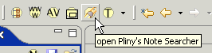

|
|
The Note Search View is most useful when you have many notes in the system. It allows you to search through all your notes by their content -- looking for words or word patterns. The underlying search engine is lucene.
You can ask for the note search view to be displayed by pushing the Note Search View icon () in Pliny's main toolbar and the very top of the Pliny window:

Normally the Note Search View will appear in Pliny's left pane -- stacked on top of the Resource Explorer view.:
If you don't like it there, you can drag its tab elsewhere in the Pliny Window to move it. You can even drag it outside of Pliny's window altogether. See the discussion about this in the section "Moving viewpanes out of the Pliny main window" in the topic Managing Panes.
To get the Resource Explorer back you can simply close the Note Search
View by clicking on its close icon ("X") in its tab, or ask for the Resource
Explorer to again be brought to the front by clicking on the Resource
Explorer's tab (here showing to the left of the Note Search View's tab, or by
clicking on the Resource Explorer's icon in main toolbar near the top of the
Pliny window ( ).
).
The note search view has a top area in which a query can be specified, and a bottom area where the results appear. A labelled view of it (after a query has been run) is:
The parts are:
Provide your query in the query field and push the "Go" button. The first time you do this in a session Pliny will need to set up its search engine (lucene), and a progress monitor box will appear to tell you this. For any subsequent search after the first Pliny will have its search engine ready to go and the response to the search will be faster.
Query syntax is based on lucene. Lucene has the concept of "fields", and in Pliny Lucene knows of two fields, the "title" (for the title of the note) and "content" (for the content of the note). If a field is not mentioned the search is conducted against the content of the note only.
Common queries are:
The full query language is the one lucene supports, and we do not describe it here. See the Lucene Documentation for further details.
It is useful to think of the functions available in the result area as a subset of those available in the Resource Explorer. You can:
Click on the New Note Button ( ) in the upper right corner of the view's pane
to create a new note that contains all the references to the items that
appeared in the search. If you do that with the Wittig results shown above you
will first see the "New Note" wizard:
) in the upper right corner of the view's pane
to create a new note that contains all the references to the items that
appeared in the search. If you do that with the Wittig results shown above you
will first see the "New Note" wizard:
You can use any of these options in the usual way to specify how Pliny handles the new note creation task. Note in particular that Pliny suggests a name for the note containing the words "Query Selection" followed by the query text itself. You can change this here if you wish. When ready, push the "Finish" button to request that the new note be created. The result is:
Note the reference area in the newly created note. It contains references to the two items that the "Wittig" search found, and the references are stacked so that the names of the referenced notes are visible. You might now wish to organise the references in the reference area to, for example, show all the items more clearly.
The resulting note is not somehow still linked to the query. If a new note containing the word "Wittig" was to be added, for example, it will not automatically appear here. Consider the result of this query as a snapshot of what was found at the time the query was run. This means that you can use the "New Note" icon in the search view as a way to start to build a new note that contains references to a concept of interest:
Pliny's Note Search feature allows you to filter the selected notes by a date range. This is useful if, for example, you remember that you wrote about "Reading" in May of 2007 but cannot remember exactly which notes come from that period of time. Note: even after you specify a date range filter, you must always still specify a search pattern in the "search" box. If you want to see all notes you created for a certain set of dates don't try to do that here; go, instead, to the "Date" tab in the Resource Explorer and find the date or dates you are interested in there.
To see the form which allows you to specify the filtering date range click on the date filter opener (highlighted in this figure by a red box):
Having clicked on this box a form will appear immediately below the "Filter by Date:" header:
The form contains the following elements:
Although one specifies a date by selecting from drop down menus in the form, Pliny controls the options that appear there so that only dates on which notes were created can be specified. If no notes were created on April 1st, 2007, but notes were created for other days in that month, you will find that the year 2007 will be in the list, and when it is selected, the month April will be availble, but "1" will not appear as one of the days you can select.
You must specify a date range by starting with the starting date year for your date range. Only years in which notes were created will appear in the year item.. Suppose you choose "2007" from the starting year drop-down menu:
As soon as you specify the year Pliny will set the ending year to match it, and will restrict the choices of ending year so only those the same or greater than your specified starting year will be available. As you will see below, the same thing happens with the ending month and year as the starting month and year is specified by you. In this way Pliny ensures that the ending date provided on this form will never be less than the starting one.
If you want the date range to be an entire calendar year (all of 2007, say) you need only specify the year. Pliny will interpret the above display as a date range from the frist day of 2007 to the last day of 2007.
If you wish to further restrict the range to a particular month or day, you can now choose the month from the second pair of drop down items. Now that the year has been specified, you will find in the "starting month" drop down's list only those months in which Pliny Notes were created in 2007. Suppose you choose "May" from the starting date's drop down menu:
Once again, Pliny will set the ending month to match the starting month, and will only allow you to select as an ending month that is the same or greater than the starting one. Here, the filter range is from the first of May 2007, to the last day of May, 2007.
Although Pliny initially sets the ending year and month based on your setting of the starting year and month, you are free to subsequently change either the ending year or month as long as the ending date is greater than the starting date. If, for example, you wanted the filter period to extend for two months, from the first day in May to the end of June, simply reset the end month to June:
Now that you have specified the starting and/or ending months, you will find the "day" dropdown menu will show the days on which notes were created in the specified month. Although you do not have to provide a day, if you wish, you can specify a starting and ending day for your search. For example:
specifies a date filter range from the beginning of May 4th, 2007, to the end of June 20th.
After you have specified the date range, you can run your search for notes containing the words you specified by clicking the "go" button that appears directly above the date-range form.
You can cancel or turn off your date range filter either by folding up the "Filter by Date" area (Pliny only applies a filter when the date range is displayed in this area), or by clearing the date by emptying the starting year (which will, in turn, clear all the other year, month and day elements also).
 |
| Pliny Help Pages by John Bradley are licensed under a Creative Commons Attribution-Noncommercial-Share Alike 2.0 UK: England & Wales License. |